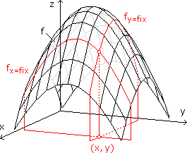
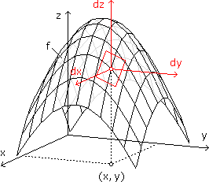

XI. DIFFERENZIALRECHNUNG
A. Differenzialquotient und Ableitung
B. Ableitung elementarer Funktionen
C. Ableitungsregeln
D. Diff-basierte Werkzeuge
E. Kurvendiskussionen
F. Extremwertaufgaben
G. Funktionen in zwei Variablen
 Ergänzungen und Details
Ergänzungen und DetailsZur Erinnerung: Die Definition der Steigung als Verhältnis von Δy zu Δx macht nur bei Geraden Sinn, weil hier jedes Steigungsdreieck dieselbe Zahl ergibt. Intuitiv nimmt man auch bei krummen Kurven – unterschiedliche – Steigungen wahr, indem man sich die Kurve aus winzigen Geradenstücken zusammengesetzt denkt. Genauer:
|
Eine Funktion f(x) heißt differenzierbar an der Stelle x, wenn dort der Differenzialquotient existiert, das ist die folgende Definition für Steigung: • df dx lim Δx—›0 f(x+Δx) – f(x) Δx |
Die entsprechenden Begriffe bei zeitabhängigen Funktionen:
mittlere Änderungsrate über dem Intervall [a,b] = Differenzenquotient
f(b) – f(a)
b – a
Änderungsrate zum Zeitpunkt x = Differenzialquotient f'(x)
Aufgabe 1: Bestimme f'(x) für
a) f(x) = x2 b) f(x) = |x|
a) f(x) = x2 b) f(x) = |x|
a) f'(x) =
lim
Δx—›0
(x+Δx)2 – x2
Δx
x2 + 2xΔx + Δx2 – x2
+ 2xΔx + Δx2 – x2
+ 2xΔx + Δx2 – x2Δx
Δx(2x + Δx)
Δx
2 Ableitung und höhere Ableitungen
Die Ableitung einer Funktion f(x) ist die Funktion f'(x), die an jeder Stelle den Wert hat, den die Originalfunktion dort als Steigung hat. Der Strich bzw. d/dx ist demnach ein unärer Operator, der auf Funktionen angewandt wird und solche ergibt. Wird er wiederholt angewandt, spricht man von höheren Ableitungen und schreibt:
f" := (f')' bzw. 
Übung: Bestimme die Ableitungen folgender Funktionskurven "grafisch" durch Abschätzen der Steigungen:

Üblicherweise haben wir mit Funktionen zu tun, die aus elementaren Funktionen zusammengerechnet werden. Das Differenzieren basiert dann auf zwei Säulen: Einerseits muss man die Ableitungen elementarer Funktionen kennen (andererseits braucht es Ableitungsregeln, die sagen, wie sich das Zusammenrechnen auf die Steigung auswirkt).
• (xr)' = rxr–1
• (ex)' = ex bzw. (bx)' = bxlnb
• (lnx)' = bzw. (logbx)' =
1
x
1
xlnb
• (cosx)' = –sinx
• (sinx)' = cosx
• (tanx)' =
1
cos2x
• (arccosx)' = –
1
√1 – x2
• (arcsinx)' =
1
√1 – x2
• (arctanx)' =
1
1 + x2
Beweis für f(x) = ex, wobei e vorläufig nur Platzhalter für eine feste reelle Zahl (> 0) sein soll:
f'(x) =
lim
Δx—›0
ex+Δx – ex
Δx
lim
Δx—›0
eΔx – 1
Δx
Die Euler'sche Zahl e definieren wir jetzt implizit als die Zahl, bei der f'(0) = 1 ist. Für eine explizite Definition spiegeln wir die Funktionskurve an der 1. Mediane. Die Steigung 1 im Punkt P(0|1) der Originalkurve wird dann zur Steigung 1 im Punkt P'(1|0) der gespiegelten Kurve:
1 = (f–1)'(1) =
lim
Δx—›0
ln(1+Δx) – ln1
Δx
lim
ln(1+Δx)1Δx |e(.) stetigΔx—›0
• Konstantenregel: Konstante Summanden verschwinden beim Differenzieren, konstante Faktoren bleiben unverändert.
Beispiel: (5x2 + 1)' = (5x2)' = 5·(x2)' = 5·2x
Die Konstantenregel merken wir uns, um schneller zu differenzieren, auch wenn es nur Spezialfälle der folgenden Ableitungsregeln sind:
• Summenregel: (f ± g)'(x) = f'(x) ± g'(x)
• Produktregel: (fg)'(x) = f'(x)g(x) + f(x)g'(x)
• Quotientenregel:
• Kettenregel: (fog)'(x) = f'(u)u'
u=g(x)
Aufgabe 2: Differenziere die folgende Funktion:
a) y = 3x4 – 5x2 + 10 b) y = xex c) y = (= tanx)
d) y = √lnx
a) y = 3x4 – 5x2 + 10 b) y = xex c) y =
sinx
cosx
a) y = 3x4 – 5x2 + 10
 y' = 3(x4)' – 5(x2)' = 3·4x3 – 5·2x
y' = 3(x4)' – 5(x2)' = 3·4x3 – 5·2xb) y = xex
y' = (x)'ex + x(ex)' = 1ex + xexc) y =
sinx
cosx
y' = (sinx)'cosx – sinx(cosx)'
cos2x
cosxcosx – sinx(–sinx)
cos2x
1
cos2x
d)
Im Hinblick auf die Steigung von Funktionskurven haben wir uns diese aus winzigen Geradenstücken zusammengesetzt gedacht. So gesehen ist die Tangente in einem Kurvenpunkt einfach die Verlängerung des dortigen Geradenstücks, d.h. an der Stelle, wo die Tangente an die Funktionskurve angelegt wird, haben beide dieselbe Steigung und denselben Funktionswert.
Aufgabe 3: "Linearisiere" die Funktion f(x) = eλx an der Stelle 0, d.h. bestimme die Gleichung der dortigen Tangente.
f(x) = eλx
f'(x) = eλxλg(x) = kx + d
(1) g'(0) = f'(0) = λ = k
(2) g(0) = f(0) = 1 = d
g(x) = λx + 1
2 Newton'sches Näherungsverfahren
Mit dem Newton'schen Näherungsverfahren werden Nullstellen von Funktionen berechnet. Am besten beginnt man an einer Stelle, die bereits im Nahbereich der Lösung liegt, ermittelt dort die Tangente und schneidet sie mit der x-Achse. An der so gewonnenen Stelle, die typischerweise näher an der gesuchten Nullstelle liegt, setzt die nächste Wiederholung an usw.
Aufgabe 4: Zwei Punkte starten mit gleicher Geschwindigkeit und Richtung an gegenüberliegenden Kreispositionen. Der eine bewegt sich auf dem Kreis, der andere tangential. Bei welchem Winkel wird die Visierlinie von Kreismitte zu Tangentenpunkt erstmals vom anderen Punkt versperrt?
φ0 = 1
 φ1 = 1,132003716
φ2 = 1,113470197
φ3 = 1,112835501
φ4 = 1,112834815 = φ
φ1 = 1,132003716
φ2 = 1,113470197
φ3 = 1,112835501
φ4 = 1,112834815 = φ
3 Regel von de l'Hospital
Auch nachdem wir bei den Grenzwertsätzen bestimmten Rechnungen mit ∞ ein Ergebnis zugewiesen haben, sind unbestimmte Ausdrücke geblieben, bei denen verschiedene Ergebnisse möglich sind, weil die Geschwindigkeit (→ Ableitung) mitspielt, mit der 0 bzw. ∞ realisert wird. Die Regel von de l'Hospital greift das für a

 bzw. a = ±∞ wie folgt auf:
bzw. a = ±∞ wie folgt auf:
•
 ?
?
=
?
?
=
lim
x—›a
f(x)
g(x)
0
0
∞
∞
lim
x—›a
f'(x)
g'(x)
Aufgabe 5: Bestimme mit der Regel von de l'Hospital.
a)
b)
c)
a)
lim
x—›1
x2 – 1
x – 1
lim
x—›∞
ex
x2 + 1
lim
xlnx—›0+
1
x
a)
lim
x—›1
x2 – 1
x – 1
= ?
0
0
lim
x—›1
2x
1
b)
lim
x—›∞
ex
x2 + 1
= ?
∞
∞
lim
x—›∞
ex
2x
= ?
∞
∞
lim
x—›∞
ex
2
c)
lim
xlnx—›0+
1
x
lim
x—›0+
lnx–1
x–1
= ?
∞
∞
lim
x—›0+
–x–1
–x–2
lim
x = 0x—›0+
Eine Asymptote ist eine "einfachere" Funktion g(x), die sich in Richtung +∞ oder –∞ der vorgegebenen Funktion f(x) beliebig nähert:
Eine Polstelle bei a bedeutet, dass dort eine vertikale Gerade die Rolle der Asymptote übernimmt:

2 Monotonie und lokale Extrempunkte
Bei streng monoton steigenden Kurvenabschnitten liegt der linke von zwei beliebigen Kurvenpunkten immer tiefer als der rechte. Im Fall einer differenzierbaren Funktionen ist das gleichbedeutend damit, dass f'(x) > 0 ist. Bei streng monoton fallenden Abschnitten ist es andersrum. Unterschiedliche Abschnitte werden durch lokale Extrempunkte (Hoch- und Tiefpunkte) mit waagrechter Tangente verknüpft.
Bei linksgekrümmten Kurvenabschnitten haben wir zunehmende Steigungen und dementsprechend f"(x) > 0, bei rechtsgekrümmten ist es andersrum. Unterschiedliche Abschnitte werden durch Wendepunkte verknüpft, in denen die Kurve von der einen Seite der Tangente auf die andere wechselt.
Allgemeiner ist die Formulierung, dass ein (nicht notwendig differenzierbarer) Kurvenabschnitt streng konvex ist, falls die gerade Verbindung zweier beliebiger Kurvenpunkte immer oberhalb der Funktionskurve liegt. Bei streng konkav ist es andersrum. Zur Wortherkunft: Wenn wir von unten auf die Funktionskurve schauen, wirkt sie entgegengewölbt (lat. convexus) bzw. ausgehöhlt (lat. concavus).
So gesehen ist eine linksgekrümmte Kurve streng konvex, eine rechtsgekrümmte streng konkav. Betragsmäßig ist die Krümmung an der Stelle x der Radiuskehrwert des Kreises, der sich dort am besten an die Funktionskurve schmiegt:
± =
1
r
f"(x)
(1 + f'(x)2)3/2
Aufgabe 6: Untersuche die Funktion
f(x) =
im Hinblick auf a) Asymptoten für x ±∞, b) Polstellen, c) lokale Extrempunkte, d) Wendepunkte.
f(x) =
x4 – 3x3 – 6x2 + 16x
4x2 – 12x + 8
im Hinblick auf a) Asymptoten für x
±∞, b) Polstellen, c) lokale Extrempunkte, d) Wendepunkte.a) Die Asymptote für x
±∞ liefert eine Polynomdivision. Der auf dem Divisor "sitzenbleibende" Rest hat dann einen kleineren Grad als dieser:b) Auf Polstellen prüfen wir dort, wo der Funktionsterm nicht definiert ist. In unserem Fall schauen wir also, wo der Nenner Null ist:
4x2 – 12x + 8 = 4(x2 – 3x + 2) = 0 x1,2 =  21
21
x1,2 = 3 ± √(–3)2 – 4·2
2
21f(x) =
x2
4
–8(x – 2)
4(x – 2)(x – 1)
(x – 1)x2
4
2
x – 1
Definitionslücke bei x = 1 ist Polstelle mit
Definitionslücke bei x=2 ist stetig behebbar mit
c) f'(x) = 2x – 2(–1)(x – 1)–2 = + = 0 ·2(x – 1)2
1
4
x
2
2
(x – 1)2
x(x – 1)2 + 4 = 0
Newton-Verfahren: xneu = x – x3 – 2x2 + x + 4
3x2 – 4x + 1
x = –1(x3 – 2x2 + x + 4):(x + 1) = x2 – 3x + 4
keine weiteren Lösungenf"(x) =
1
2
1
2
4
(x – 1)3
f"(–1) > 0 T(–1|–0,75)
d) f"(x) = – = 0 ·2(x – 1)3
1
2
4
(x – 1)3
(x – 1)3 – 8 = 0
x – 1 = 3√8 x = 3f"'(x) = (–4)(–3)(x – 1)–4 =
12
(x – 1)4
f"'(3) ≠ 0 W(3|–0,75)4 Verallgemeinerte Interpolationen
... sind Umkehraufgaben in dem Sinn, dass Eigenschaften des Graphen vorgegebenen sind und die Funktionsgleichung gesucht wird.
Aufgabe 7: Wie lautet die Funktionsgleichung für ein Polynom dritten Grades, wenn der Wendepunkt bei x = 1 liegt, die Tangente bei x = 2 mit der positiven x-Achse den Winkel α = 83,66° einschließt und P(3|10) ein lokaler Extrempunkt ist?
y = ax3 + bx2 + cx + d
y' = 3ax2 + 2bx + c
y" = 6ax + 2b
___________________
(1) y"(1) = 0 6a·1 + 2b = 0
6a·1 + 2b = 0
(2) y'(2) = tan83,66° 3a·22 + 2b·2 + c = 9
3a·22 + 2b·2 + c = 9
(3) y'(3) = 0 3a·32 + 2b·3 + c = 0
3a·32 + 2b·3 + c = 0
(4) y(3) = 10 a·33 + b·32 + c·3 + d = 10
a·33 + b·32 + c·3 + d = 10
________________________________________
(2)-(3) –15a – 2b = 9
+(1) –9a = 9 a = –1
a = –1 (1) –6 + 2b = 0 b = 3 (3) –27 + 18 + c c = 9 (4) –27 + 27 + 27 + d = 10 d = –17Lösung: y = –x3 + 3x2 + 9x – 17
Es geht um Textaufgaben, in denen der kleinste/größte Wert gesucht wird, den eine differenzierbare Funktion in einem Intervall annimmt. Dazu nehmen wir die Stellen mit waagrechter Tangente und die Randstellen und schauen, welcher der zugehörigen Funktionswerte am kleinsten/größten ist.
Oft findet sich im Intervall nur eine Stelle mit f'(x) = 0 und dort f"(x) > 0 (zunehmende Steigungen) bzw. f"(x) < 0 (abnehmende Steigungen), das ist dann automatisch das globale Minimum bzw. Maximum.
Aufgabe 8: Ein Biker befindet sich 5 km abseits einer geraden Straße und 13 km von einem Ort entfernt, zu dem die Straße führt. Wie kommt er am schnellsten dorthin, wenn er sich im Gelände mit 15 km/h bewegt und auf der Straße mit 25 km/h?
Hauptbedingung: Fahrtzeit t(x,y) =
x
15
y
25
Die "Zielgröße" könnte so von x und y abhängen, dass wir beide unabhängig voneinander ändern können (siehe nächster Abschnitt). In unserem Fall ist das aber nicht so, d.h. es es gibt eine
Nebenbedingung: y = √132 – 52 – √x2 – 52
Wir setzen die Nebenbedingung in die Hauptbedingung ein, sodass die Zielgröße nur mehr von einer Variablen abhängt:
t(x) = 0,06x + 0,04(12 – √x2 – 25) = min! für 5 ≤ x ≤ 13
0,06√x2 – 25 – 0,04x = 0 +0,04x :0,06
√x2 – 25 = 0,6x (.)2
x2 – 25 = 0,36x2
x1,2 = ±6,25
x = 6,25 kmOb es sich tatsächlich um ein Minimum handelt, können wir anhand der zweiten Ableitung überprüfen:
t"(6,25) > 0 |  |
Der Graph einer Funktion z = f(x,y) ist ein Funktionsgebirge über der xy-Ebene. Die partiellen Ableitungen an der Stelle (x,y) sagen, wie stark das Funktionsgebirge dort in x- und y-Richtung ansteigt. Dazu denken wir uns den Funktionsterm nur von der Variablen abhängig, nach der partiell differenziert wird, und halten die andere Variable konstant: • ∂f ∂x dfy=fix dx • ∂f ∂y dfx=fix dy |
Aufgabe 9: Bilde die ersten und zweiten partiellen Ableitungen der Funktion f: z = x2ex–y
∂z
∂x
∂2z
∂x2
∂
∂x
∂2z
∂y∂x
∂
∂y
∂z
∂y
∂2z
∂y2
∂
∂y
∂2z
∂x∂y
∂
∂x
Schwarz'scher Vertauschungssatz: Die gemischten Ableitungen sind – wenn stetig – unabhängig von der Reihenfolge, in der differenziert wird.
2 Tangentialebene und Gradient
|  |
Wo die partiellen Ableitungen stetig sind, können wir eine Tangentialebene anlegen (alle durch den Berührungspunkt laufenden Geraden aus dieser Ebene sind dann Tangenten). Die Gleichung der Tangentialebene an der Stelle (x,y), ausgedrückt in Koordinaten dx, dy, dz ("Differenziale"), die ihren Ursprung im Berührungspunkt der Tangentialebene haben, heißt vollständiges Differenzial: • dz = k1dx + k2dy mit k1 = ∂f ∂x ∂f ∂y |
Aufgabe 10: Bestimme das vollständige Differenzial von z = x2(1 – y) an der Stelle (1|–2).
df(x, y): dz = 2x(1 – y)dx + (–x2)dy
df(1, –2): dz = 6dx – dyDer Gradientenvektor ist die Projektion des Normalvektors der Tangentialebene in die xy-Ebene, sodass er in Richtung der größten Steigung zeigt und diese als Betrag hat.

|
df(x,y): k1dx + k2dy – dz = 0 größte Steigung = dz(k1, k2) √k12 + k22 |
3 Lineare Fehlerfortpflanzung
Wenn wir einen gemessenen Wert, der sich vom wahren Wert etwas unterscheidet, in eine Formel einsetzen, pflanzt sich der Fehler ins Ergebnis fort. Um diesen Fehler abzuschätzen, können wir das vollständige Differenzial verwenden:
|
x = gemessener Wert |Δx| = absoluter Maximalfehler Δx x vollständiges Differenzial: dy = f'(x)dx Δymax ≈ f'(x)Δx
|
Aufgabe 11: Ein Kreis hat den Radius r = (48 ± 0,5) cm. Bestimme den maximalen Fehler bei Berechnung der Fläche näherungsweise über lineare Fehlerfortpflanzung.
A = πr2
vollständiges Differenzial: dA = 2πrdr
ΔAmax ≈ 2π48·0,5 = 150,8 cm2 2,08%Die lineare Fehlerfortpflanzung wird vor allem dann interessant, wenn das Ergebnis von mehreren Variablen abhängt: z = f(x,y)
vollständiges Differenzial: dz =
∂f
∂x
∂f
∂y
Δzmax ≈ ∂f
∂x
∂f
∂y
Aufgabe 12: Ein Drehzylinder hat den Radius r = (55 ± 1) mm und die Höhe h = (180 ± 2) mm. Bestimme den maximalen Fehler bei Berechnung des Volumens näherungsweise über lineare Fehlerfortpflanzung.
V = πr2h
vollständiges Differenzial: dV = 2πrhdr + πr2dh
ΔVmax ≈ 2π55·180·1 + π552·2 = 81210 mm3 4,75%4 Extremwertaufgabe in zwei Variablen
Aufgabe 13: Ein Blechstreifen mit Breite b soll zu einer Rinne mit trapezförmigem Querschnitt geformt werden. Bestimme Breite und Neigungswinkel der Seitenwände, sodass das Fassungsvermögen der Rinne maximal wird.
|
HB: A = xrsinα + r2cosαsinα = max! NB: b = x + 2r x = b – 2r HBA(r,α) = (br–2r2)sinα + r2cosαsinα |
Was bei Funktionen in einer Variablen die Stelle mit waagrechter Tangente war, ist jetzt die Stelle mit waagrechter Tangentialebene:
(1)
∂A
∂r
(2)
∂A
∂α
(1) b = 4r – 2rcosα
(2)(4r2 – 2r2cosα – 2r2)cosα – r2sin2α + r2cos2α = 0 :r2 (= 0 scheidet aus)
(2 – 2cosα)cosα – sin2α + cos2α = 0 sin2α = 1 – cos2α
2cosα – 2cos2α – 1 + cos2α + cos2α = 0
cosα = 0,5
α = 60° (1) b = 4r – 2rcos60° = 3r r = a/3